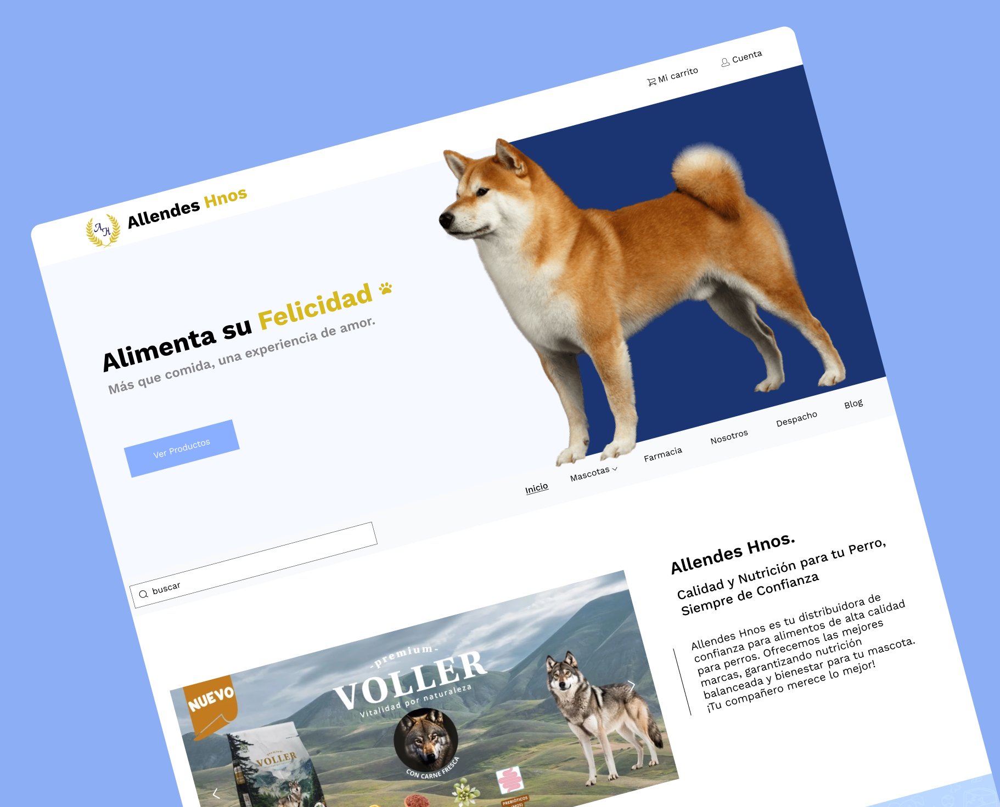
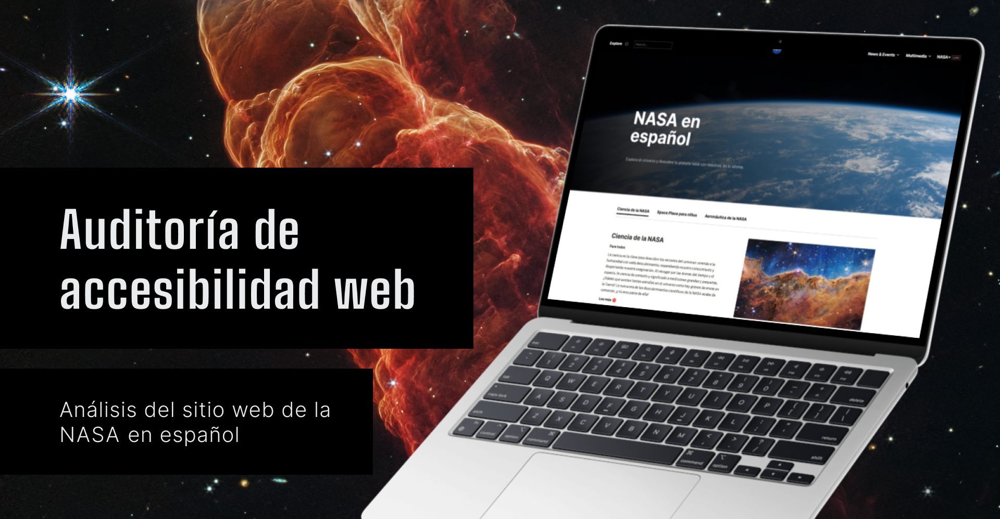
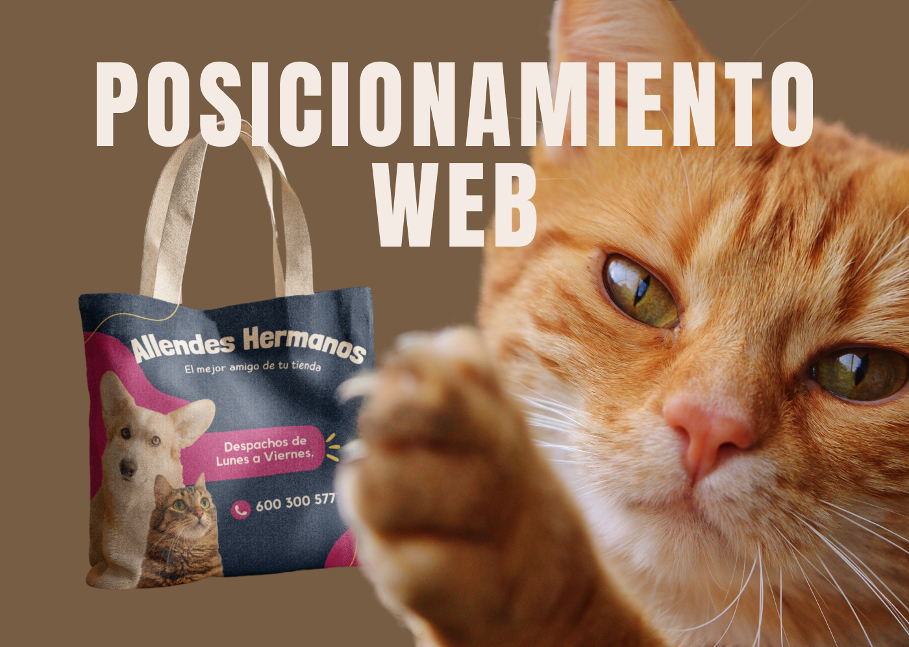
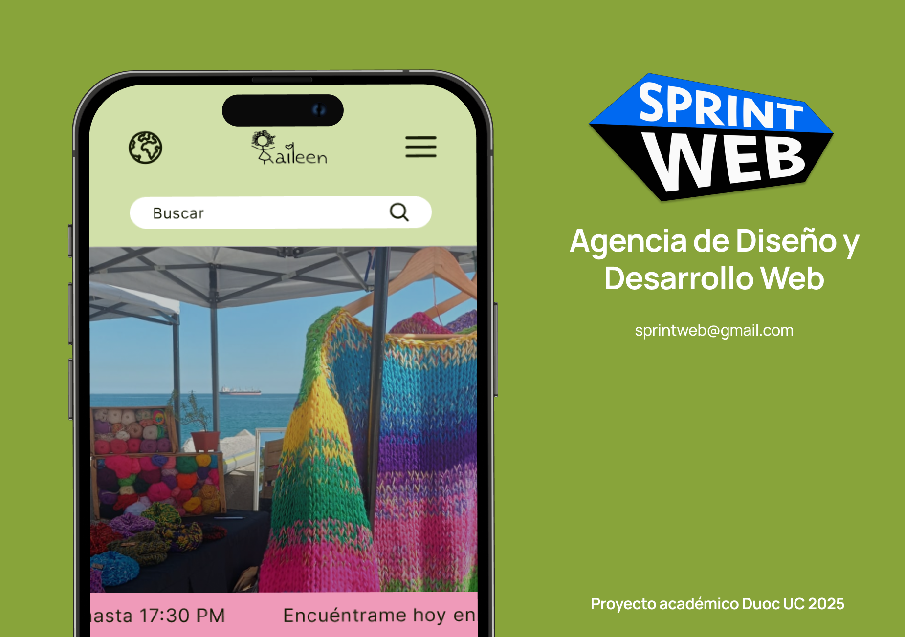

FIEL AL DISEÑO, GUAU
Primera vez codificando por encargo, interpretar y ejecutar en HTML + CSS con más variables tipográficas de las esperadas.
Un registro sobre procesos, aprendizajes, decisiones y lo que se vuelve a intentar.

Primera vez codificando por encargo, interpretar y ejecutar en HTML + CSS con más variables tipográficas de las esperadas.

Análisis de cumplimiento WCAG del sitio de la NASA en español. Diseño inclusivo, tecnologías asistivas, presentado en Behance.

E-commerce fan con tienda, noticias y fechas de conciertos. WordPress, WooCommerce, JavaScript, pasarela de pago.

Revista/blog con contenido dinámico sobre misterios, reviews y cultura oscura. WordPress, PHP, base de datos, hosting y cPanel.

Plataforma eLearning a medida para gestión de trabajadores y capacitaciones en prevención de riesgos, desarrollada con WordP...

A pesar de su amplia trayectoria en el rubro, el sitio web de Allendes Hermanos no está captando nuevos clientes...

Aunque Tejidos Kaileen ofrece un producto de alta calidad y valor artesanal, su dependencia total de Instagram limita su visibilidad...
E-commerce fan con tienda, noticias y fechas de conciertos. WordPress, WooCommerce, JavaScript, pasarela de pago.